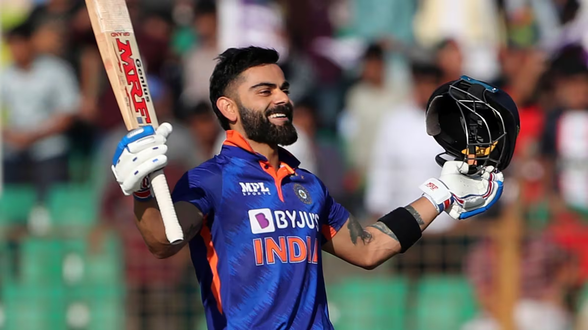

🏏 Virat Kohli 🏏
A spunky, chubby teenager with gelled hair shot to fame after leading India to glory in the Under-19 World Cup at Kuala Lumpur in early 2008. In an Indian team filled with saint-like icons worthy of their own hagiographies, Virat Kohli, with his most un-Indian, 'bad-boy' intensity, would clearly be an outcast.
Images 🖼

Instagram 🖼
Google Map
Favourite Songs
-->